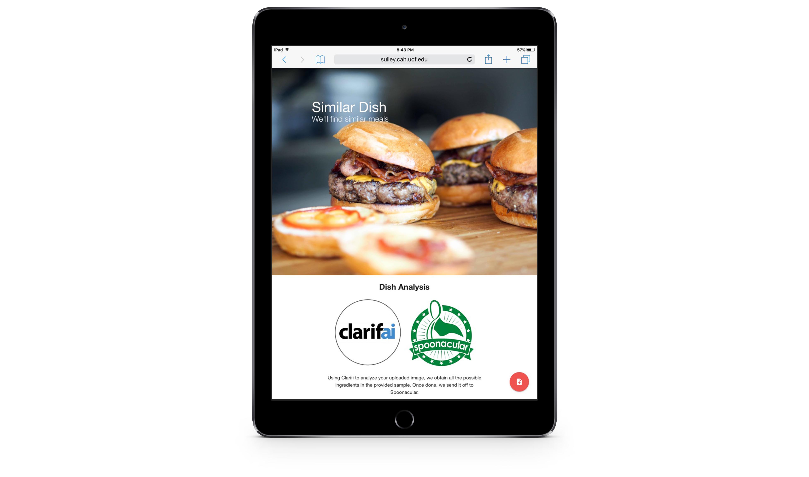
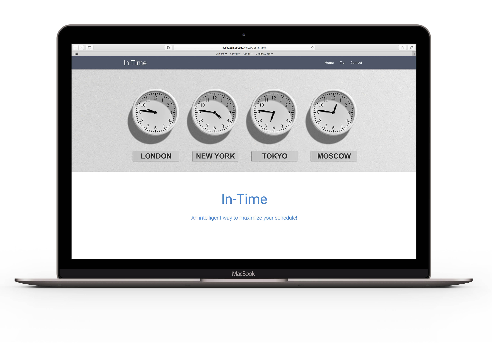
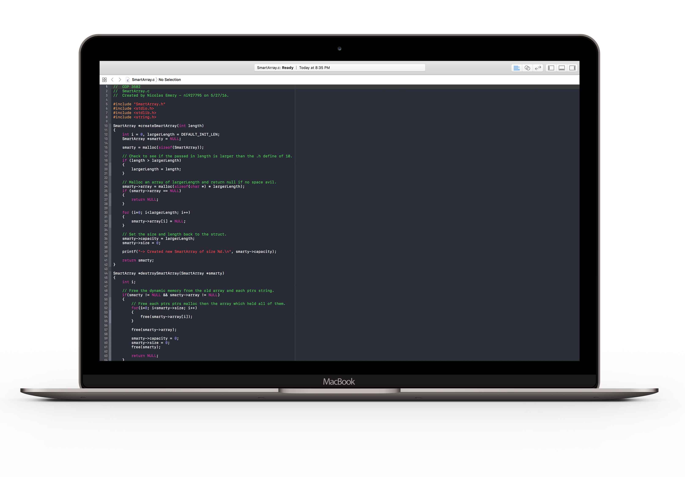
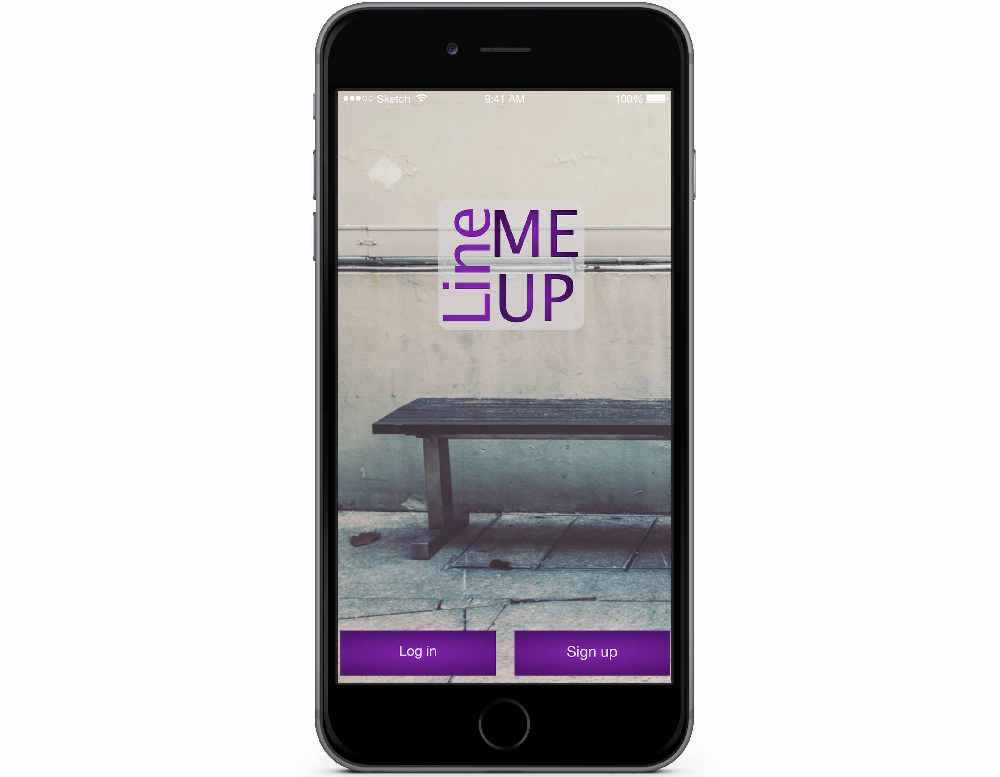
Hello!
Bio
I am a recent graduate at the University of Central Florida with a
Bachelor Degree in Digital Media - focus in Web Design - with a
minor in Computer Science.
My passion lies between the intersection of technology and art.
I enjoy both programming for web and software engineering.
At the same time, I also love to design what the layout or
interaction for the software will be like.
Experience
Amazon - Design Technologist Intern
Worked in concept lab prototyping new ideas and interactions for consumers.
I primarily used React Native to create the mobile solutions.
Universal Creative - Creative Design Intern
Worked with the creative development team for their upcoming park in
Beijing China. I was tasked to create mood boards, style guides, and do
design based research for an up and coming themed land inside the park.
Apple - At Home iOS Advisor
I was tasked to solve day to day problems with customers iOS running devices.
I also had to become well versed with the Mac OS X file structure.
All my work can be found on my site or individually at:
GitHub: www.github.com/Nicolas5150
Behance: www.behance.net/NicolasDesigns
LinkedIn: www.linkedin.com/in/Nicolas5150
Tex Mex Rebrand
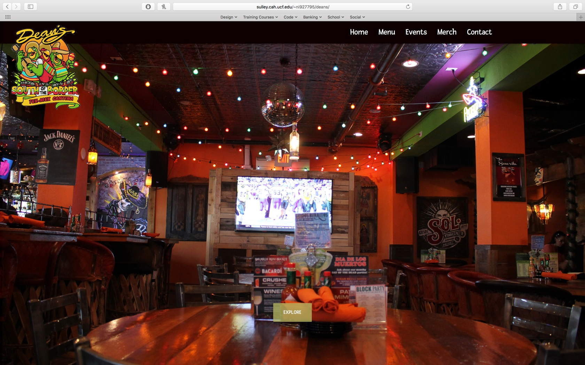
{kind=link}
{kind=link}
{kind=link}
Source File
Live Demo
Created with HTML, JS, CSS.
Website built on Google's Materialize framework.
The website is a rebranding of a tex mex restaurant - as a first pass of what the site could end up looking like.
The site tries to keep use of original logo and color scheme.
The new site consists of less pages but still has the same contnet expressed.
Similar Dish
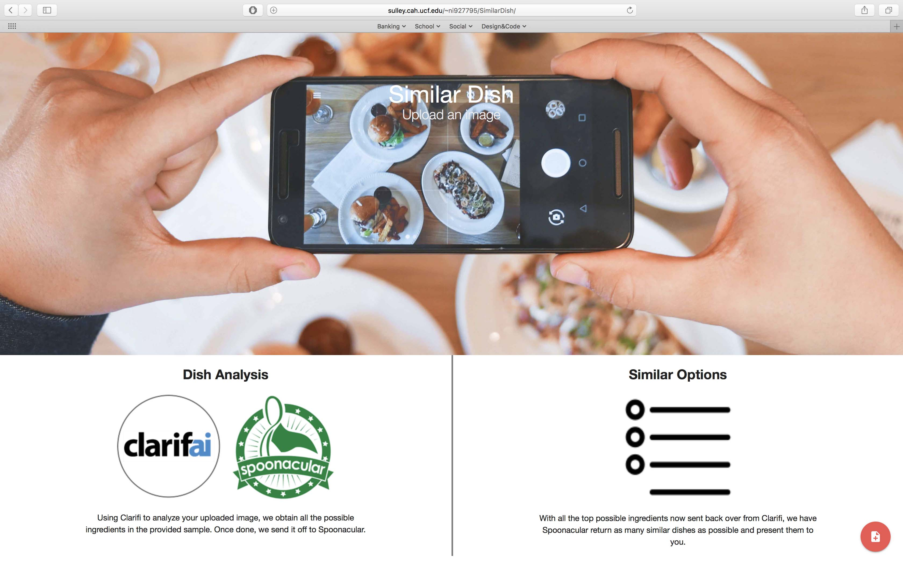
{kind=link}
{kind=link}
{kind=link}
{kind=link}
{kind=link}
Source File
Live Demo
Created with, Claraifi and Spoonacular API.
Website built on Google's Materialize framework.
The website takes in a user's image, uploads it, then creates a related url which is sent to Claraifi.
There it processes the image and returns any ingredients it believes are 85% possible of being in the image.
This list is sent to Spoonacular and returns any meals that can be made using the given ingredients.
It is then presented to the user; clicking reveals the needed and given ingredients - as well as the
cooking instructions if possible.
Time and Distance
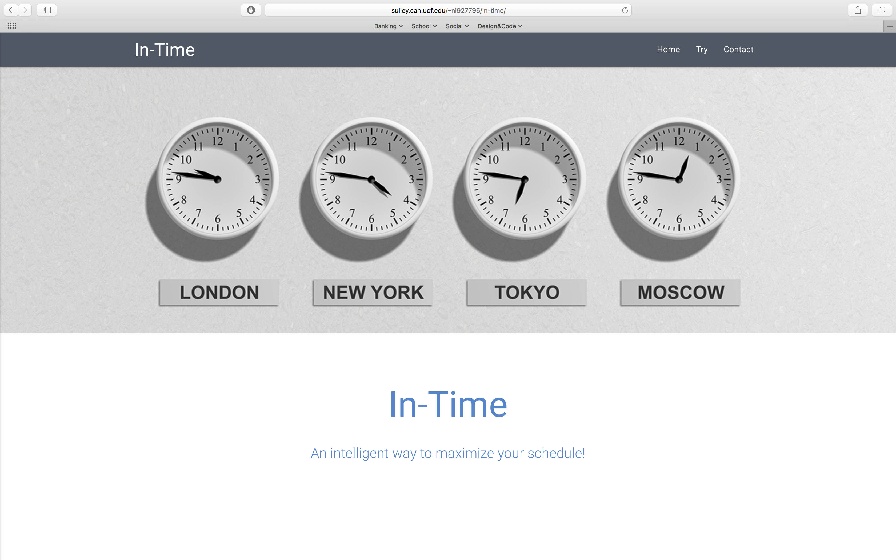
{kind=link}
{kind=link}
{kind=link}
{kind=link}
Source File
Live Demo
Created with Materialize, and Google Maps API.
Website built on Google's Materialize framework.
The website takes in a user's current location and destination (using googles places API). It processes
the two waypoints (using Google's Distance Matrix). After it's calculated, it notifies the user of trip length and when they
should depart their location. Once done they can text themselves, which includes a link to a Google Maps route.
Surfboard Ecommerce
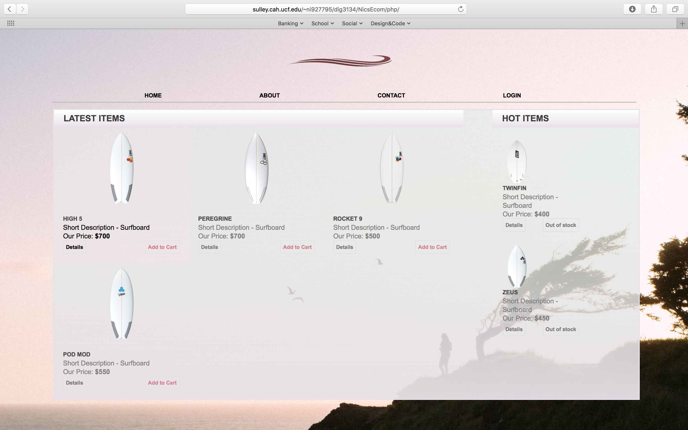
{kind=link}
{kind=link}
{kind=link}
Source File
Live Demo
Created with PHP, SQL, and used phpMyAdmin.
Simulates the initial process of a website and includes:
user account creation, account security (with browser and OS detection),
and email support.
Media Content
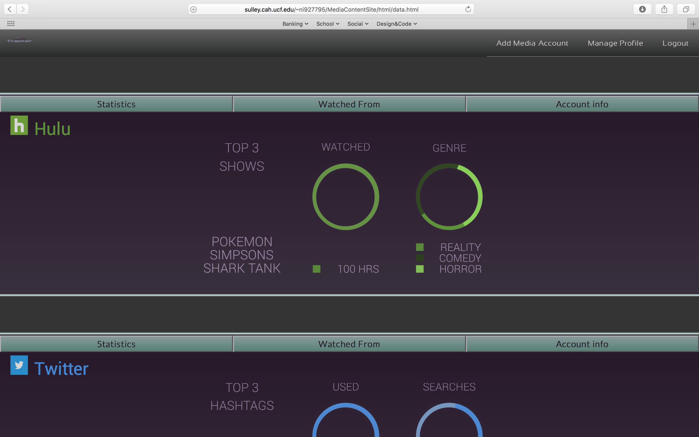
{kind=link}
{kind=link}
{kind=link}
Source File
Live Demo
Created with HTML, CSS, JS, and jquery.
Simulates having all media account statistics put in one site.
The site has three parts for an account added which includes:
progress circles, Google Map API, and the individual media login.
Batman Survey
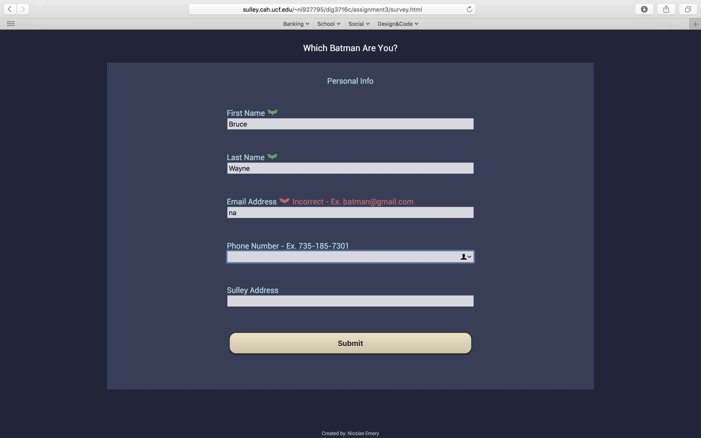
{kind=link}
{kind=link}
{kind=link}
Source File
Live Demo
Created with HTML, CSS, and plain JS.
Based off the idea of surveys for personality. In this case, which Batman are you.
JavaScript code includes:
validating a user's input (with regular expressions), and
checks for a selected answer, then stores for computation.
Text (Trie) Prediction
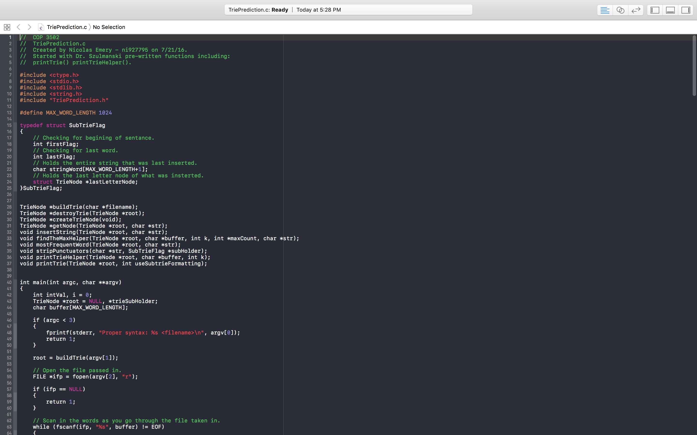
{kind=link}
Source File
Created with C language
Advanced tree data structure that is used to store strings,
and which allows for efficient insertion and lookup in a trie;
this allowed for a text like prediction. Dynamic memory management,
file I/O, processing command line arguments, structs, and pointers to structs,
were all used to complete this task.
Boggle Re-Creation
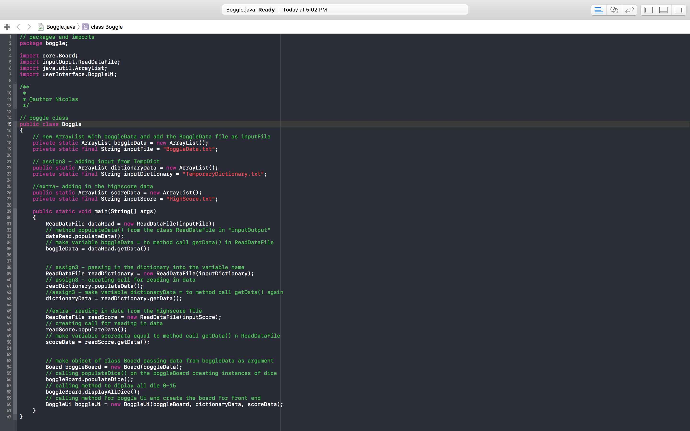
{kind=link}
{kind=link}
Source File
Created with Java language
Object oriented approach of re-creating the game boggle.
A dictionary text file is added for the words to be compared
against and a score is based upon the length of the word found.
Uses classes, methods, and constructors to create each session of the game.
Storing Fibonacci Sequence
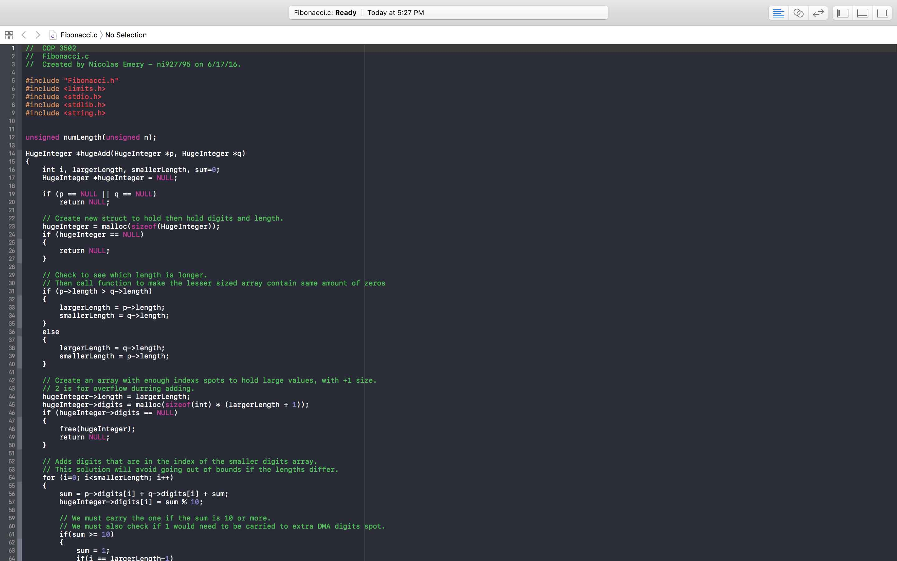
{kind=link}
Source File
Created with C language
Implemented Fibonacci function avoiding repetitive computation
by computing sequence from bottom up: F(0) through F(n).
Overcame limitations of C’s 32-bit integers
by storing huge integers in arrays of individual digits.
Crafted algorithm of moderate complexity to develop
understanding of integer type limitations.
Search Trees
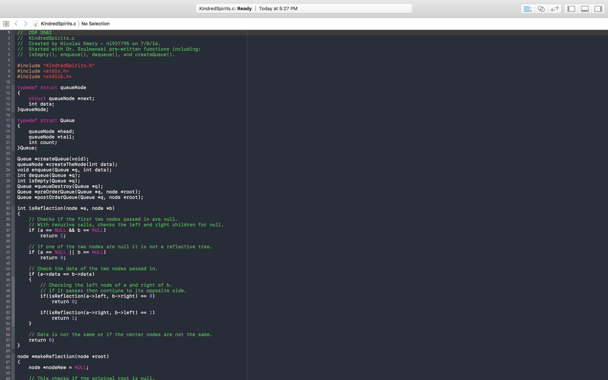
{kind=link}
Source File
Created with C language
Recursive tree exercises including:
If two trees are a mirror of one another -
all nodes match on the opposite tree on the opposite branch.
If the preorder traversal of one of the trees corresponds to the post order traversal of the other tree.
Smart Array
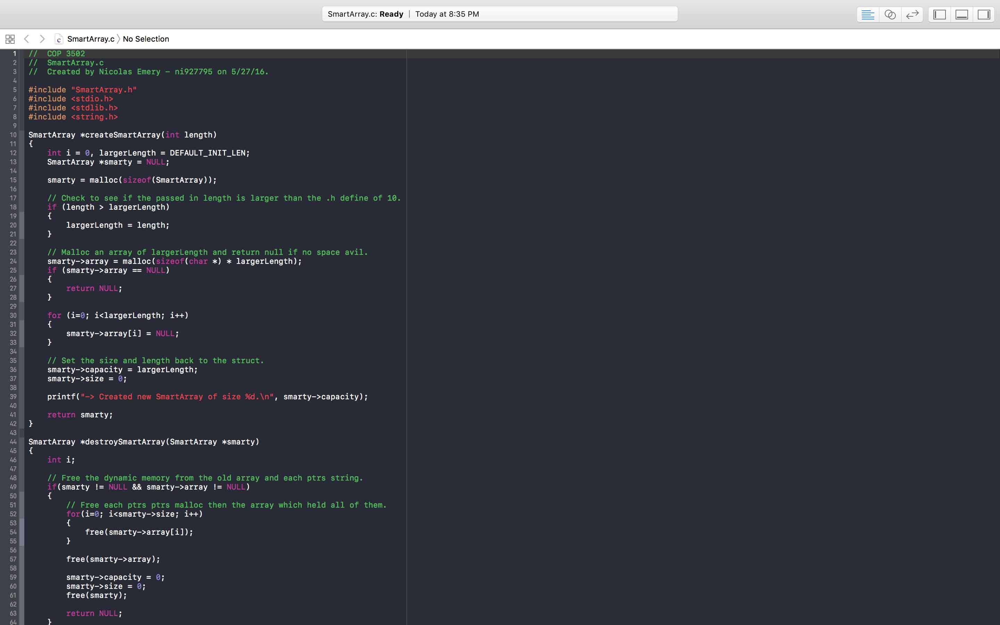
{kind=link}
Source File
Created with C language
Created arrays that expand automatically whenever they get too full of integers.
Gained advanced experience working with dynamic memory management and structs in C.
learned to manage programs that use multiple source files.
Image Manipulation
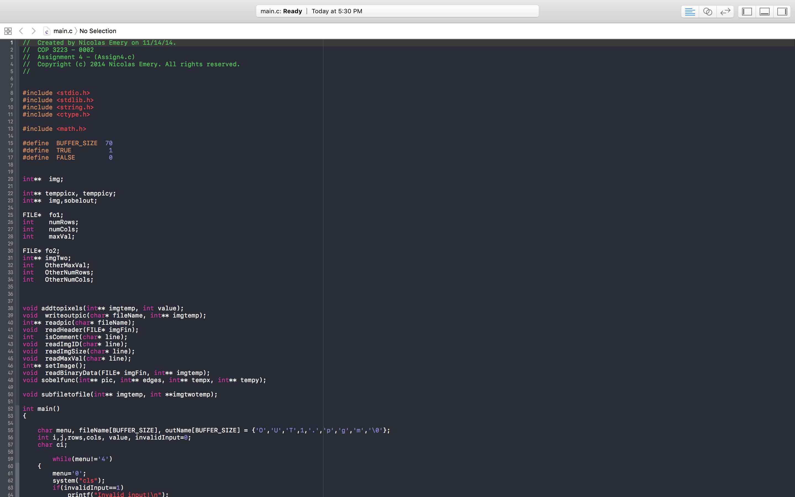
{kind=link}
Source File
Created with C language
Used 2-dimensional arrays and files (of pictures) and created functions
to take arrays as arguments, then manipulate the array
to create new images (as outputted files).
Payroll Program
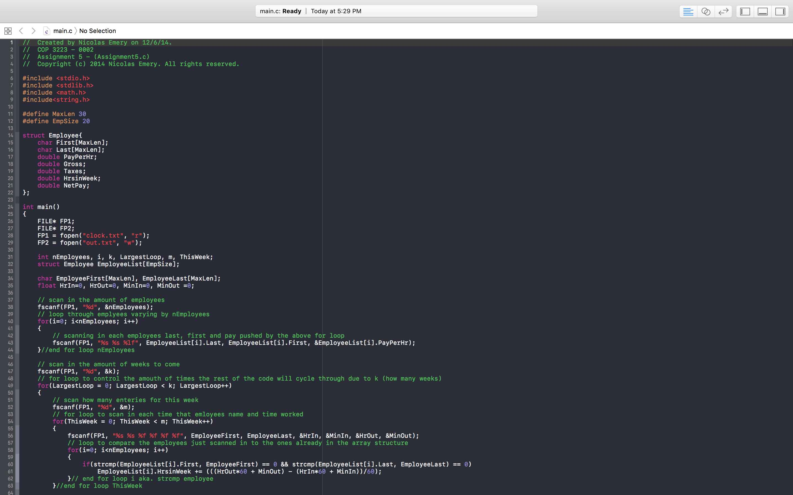
{kind=link}
Source File
Created with C language
Using structures, as well as arrays of structures, a text file is read in
with an employee’s hours and wage. This is then calculated,
with overtime and taxes being considered, to find out the salary of the worker.
Food Bank Program
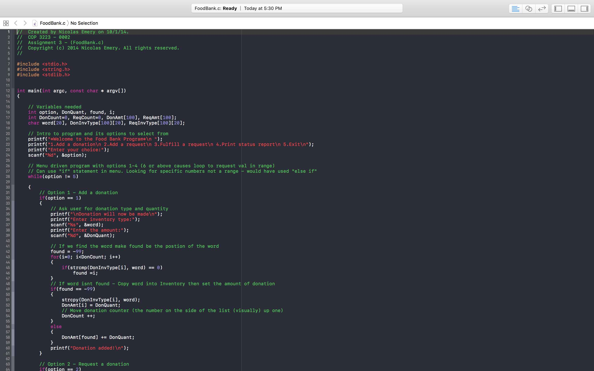
{kind=link}
Source File
Created with C language
A Food Bank Program used to keep track of the stock the Food Bank has
(i.e., the donations), keeping a record of requests that come in,
fulfilling requests and printing the status report, which consists
of the amount of stock present in the food bank and the requests that are not yet fulfilled.
iOS Headphone Carousel

{kind=link}
{kind=link}
{kind=link}
Source File
Live Demo
Created with Sketch, animated with animation plugin.
One day rapid design and animation exercise
The overall design has been created in Sketch for iOS.
It was then animated with key frames with an animation plugin to show a walk through of the App.
The concept of is to allow users to swipe either left or right in a carousel to see available headphone colors.
iOS Line Waiting Idea
{kind=link}
{kind=link}
{kind=link}
{kind=link}
{kind=link}
Source File
Live Demo
Created with Sketch, animated in Premiere Pro.
An in progress idea that I have been working on - as a side project.
The overall design has been created in Sketch for iOS.
It was then animated in Adobe Premier Pro to show a walk through of the App.
The concept of the site is to allow users to set a location for others to see (line waiters).
These line waiters would wait on behalf of the other person in exchange for money.
A functional (non graphical) prototype for the web is also being built.
iOS Beef Menu
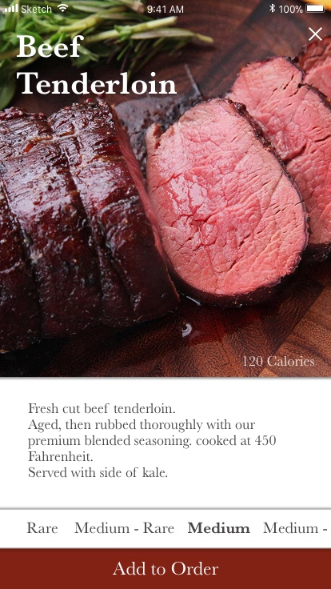
{kind=link}
Source File
Created with Sketch.
One day rapid design
The overall design has been created in Sketch for iOS.
The concept of is to allow users to swipe either left or right on the bottom to pick how they would like their food cooked.
iOS Watch Showcase
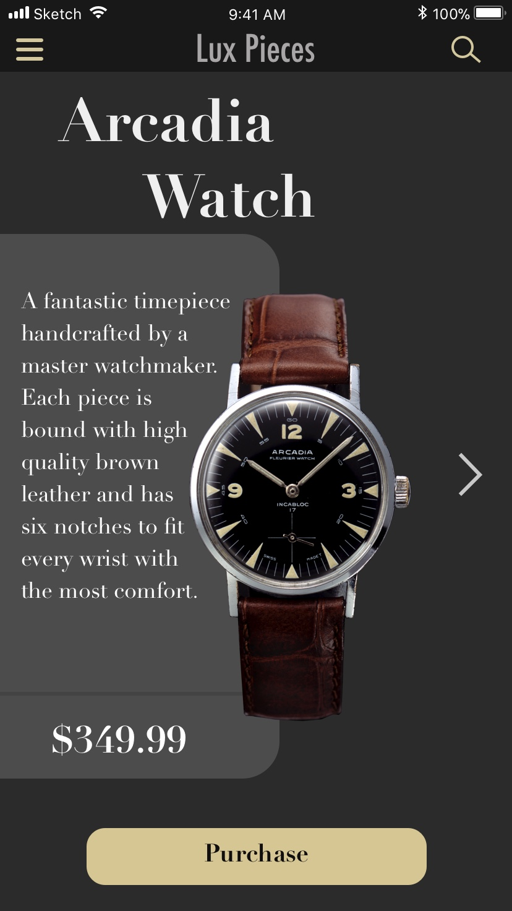
{kind=link}
Source File
Created with Sketch.
One day rapid design
The overall design has been created in Sketch for iOS.
The concept is to showcase different watches available.
Mobile Surf Shop
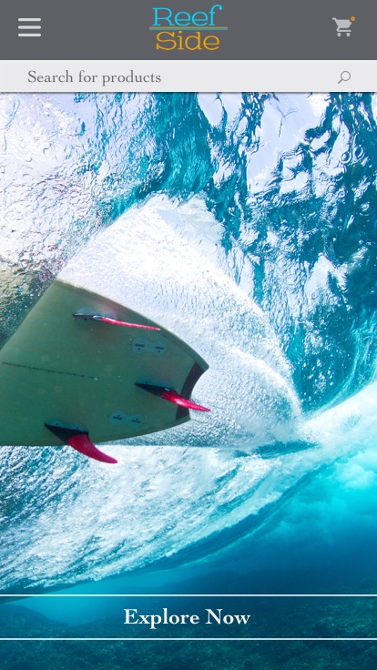
{kind=link}
{kind=link}
{kind=link}
{kind=link}
{kind=link}
Source File
Created with Sketch.
A mid fidelity design project, created for a design course.
The mobile first site is designed to be used to make purchases on products related to surfing and beach related items.
iOS Wine Pairing Idea

{kind=link}
{kind=link}
{kind=link}
{kind=link}
Source File
Live Demo
Created with Adobe XD, and Premiere Pro.
A mid fidelity group project, created for a user experience course using Adobe XD.
The idea behind the project was to create an application to help others find pairings for food or wine.
Once the wine is found, then the user would be shown a location of the closest store selling the product.
iOS Stats Mockup
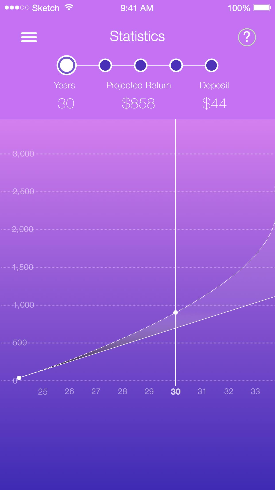
{kind=link}
Source File
Created with Sketch.
A high fidelity static mockup - using Sketch.
It was created as a tutorial piece to help learn more of what Sketch has to offer.
The model is to look as if it were a page from an application dealing with statistics for a stock.
Fort Zachary Taylor
{kind=link}
{kind=link}
{kind=link}
Source File
10/15/16
Shot with iPhone 7 Plus.
Shots inside Fort Zachary Taylor at the historic state park in Key West, Florida.
Paynes Prairie
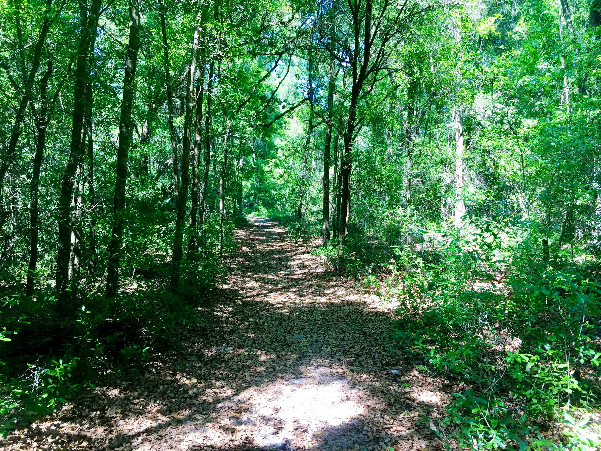
{kind=link}
Source File
09/05/16
Shot with iPhone 6 Plus.
Looking down a nature trail at Paynes Prairie Preserve State Park in Micanopy, Florida.
Providence Canyon
{kind=link}
{kind=link}
Source File
09/30/16
Shot with iPhone 6 Plus.
Aerial shots taken on the top a ledge at Providence Canyon State Park in Lumpkin, Georgia.
Smoky Mountains
{kind=link}
{kind=link}
{kind=link}
Source File
11/11/15
Shot with iPhone 6 Plus.
Series of shots taken in the Great Smoky Mountains National Park in Tennessee.
Coronado Springs
{kind=link}
Source File
08/18/16
Shot with iPhone 6 Plus.
Aerial shot of lake at Disney Coronado Springs in Orlando, Florida.
Empire State Building
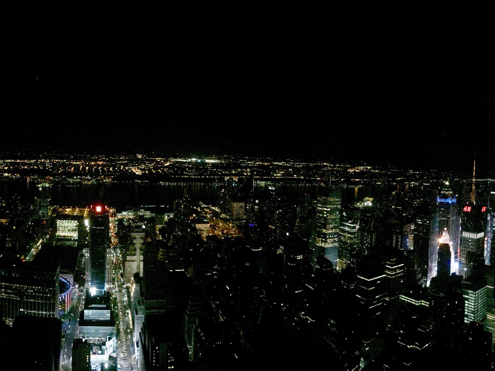
{kind=link}
Source File
06/6/15
Shot with iPhone 6 Plus.
Aerial shot taken on the observation deck of the Empire State Building
– towards Time Squares – in New York, New York.
House 3D - Maya
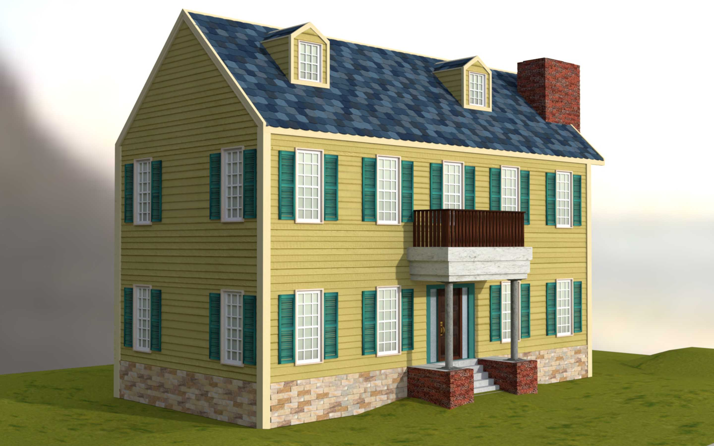
{kind=link}
{kind=link}
{kind=link}
{kind=link}
{kind=link}
{kind=link}
Source File
4/17/16
Created with Maya and Photoshop.
Colonial style home first drawn to a relative scale by hand and then imported the drawings into Maya 2016.
All the modeling was done in Maya and then textured with Photoshop. It was finally rendered using Mental Ray.
Pirate Inn 3D - Maya
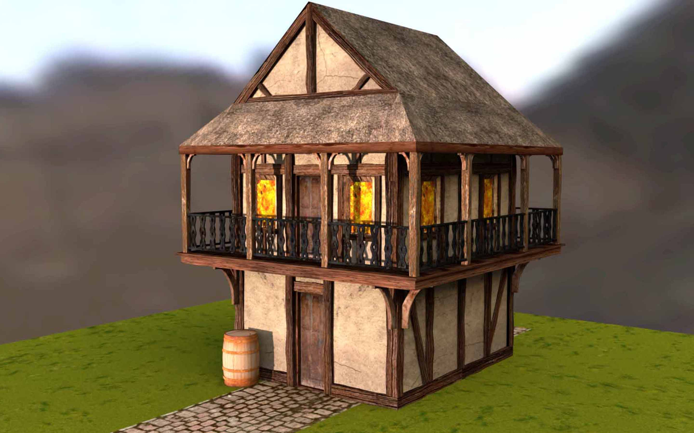
{kind=link}
{kind=link}
Source File
3/13/16
Created with Maya and Photoshop.
Pirate themed inn modeled in Maya 2016 and then textured with Photoshop.
It was finally rendered using Mental Ray.
Image Restoration
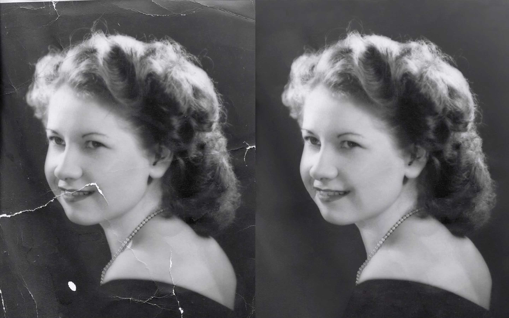
{kind=link}
Source File
0/15/16
Created with Photoshop.
Given a damaged photo, I was assigned to restore the image using non-destructive techniques
leaving the original (master version) intact on the bottom layer.
The process was done using Photoshop.
Image Colorization
{kind=link}
Source File
0/15/16
Created with Photoshop.
Given a black and white image, I was assigned to colorize the image using non-destructive techniques
leaving the original (master version) intact on the bottom layer.
The process was done using Photoshop.
Image De-Restoration
{kind=link}
Source File
0/15/16
Created with Photoshop.
Given a new image, I was assigned to simulate the effects of old age and damage to the photo,
using non-destructive techniques leaving the original (master version) intact on the bottom layer.
The process was done using Photoshop.
Grayscale Guitar
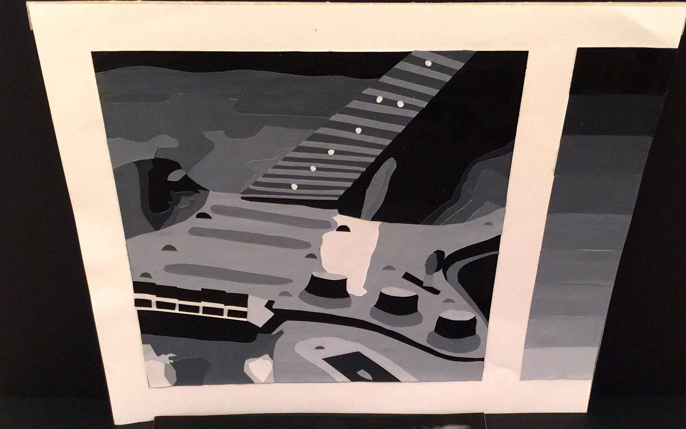
{kind=link}
Source File
11/15/14
Created with paint and paper.
With a reference photo of a Fender guitar in gray scale,
I used only black and white paint to I create a gray scale replica with small pieces of cut up paper.
Space Book
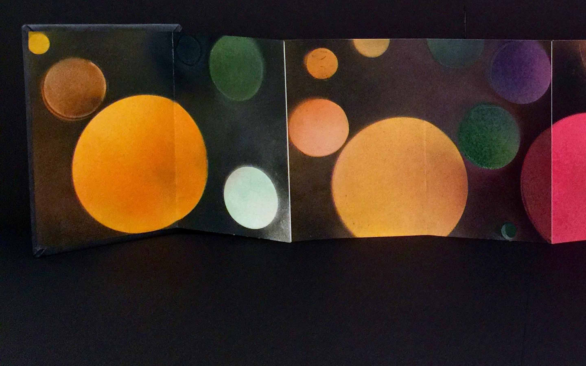
{kind=link}
Source File
12/1/14
Created with spray paint.
Created with white paper bound together to form a book.
The book was then spray painted using circular traces to create the planets.
On one side of the book is the cool color spectrum, while on the other is the warm.
Brief Case
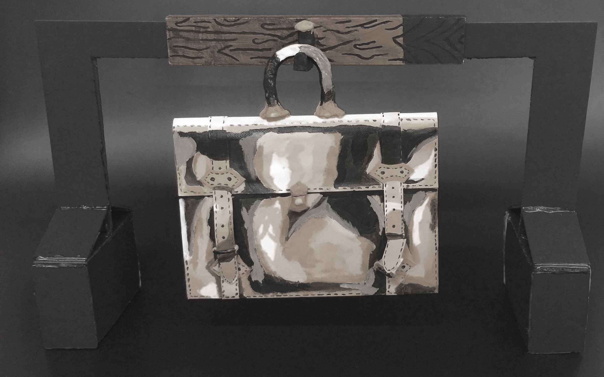
{kind=link}
{kind=link}
Source File
1/28/15
Created with paper sand and foam core.
Using a reference image of a brief case,
I created an inspired piece out of just foam core, paper sand, gesso, and hot glue.
It was then painted with a yellow color range and hung from the foam core.
Child's Toy
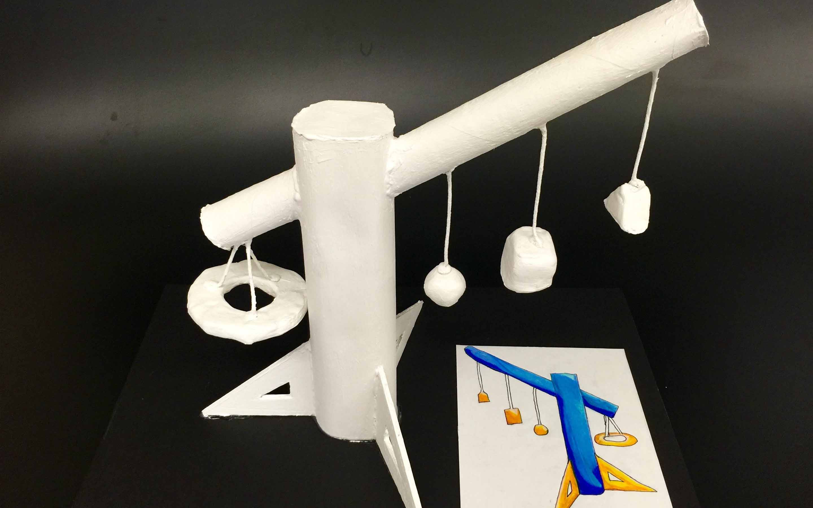
{kind=link}
Source File
3/21/15
Created with paper sand and foam core.
Inspired by children toys such as the baby mobile (that hangs above a crib) and basic shapes,
I created a piece using just foam core, paper sand, gesso, and hot glue.
Self Drawing
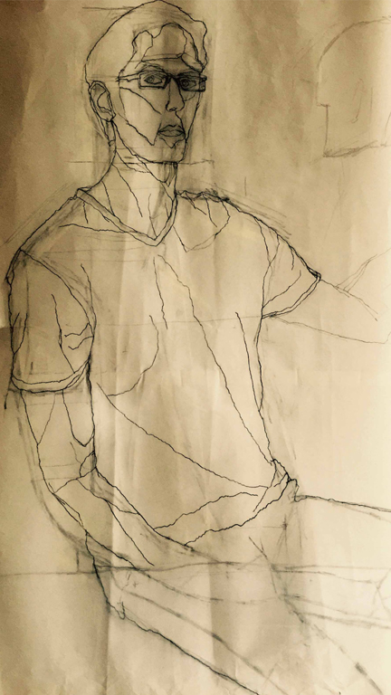
{kind=link}
Source File
4/6/15
24" x 36" newspaper with 4B pencil.
Drawing of self in mirror.
Self Drawing With Skeleton
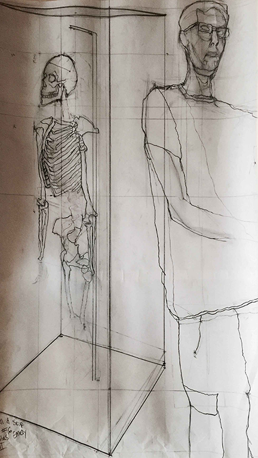
{kind=link}
Source File
03/19/15
24" x 36" newspaper with 4B pencil
Drawing of self in mirror with skeleton.
Sculpture Drawing
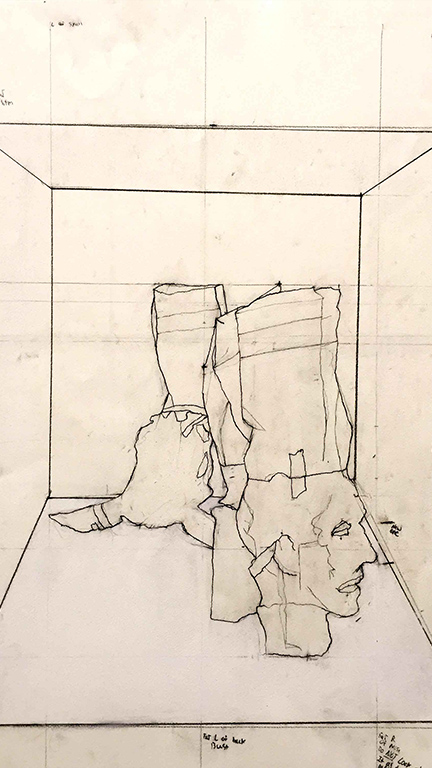
{kind=link}
Source File
11/20/14
24" x 36" newspaper with 4B pencil.
Drawing of sculpture and cow skull.
Live Model Drawing
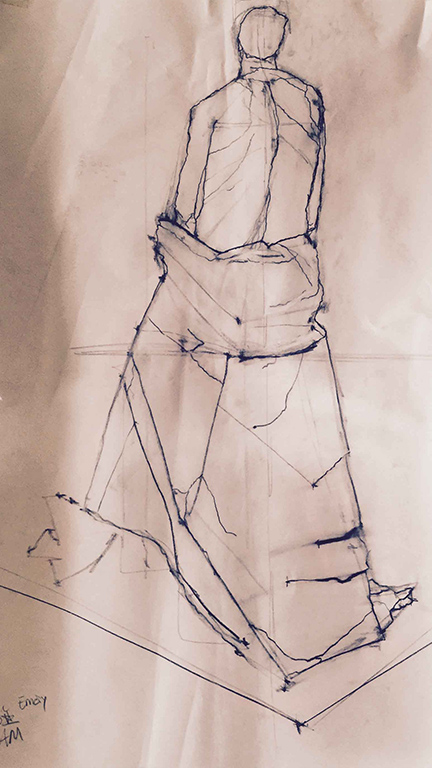
{kind=link}
Source File
04/4/15
24" x 36" newspaper with 4B pencil
Drawing of live nude model.
Boxes Drawing
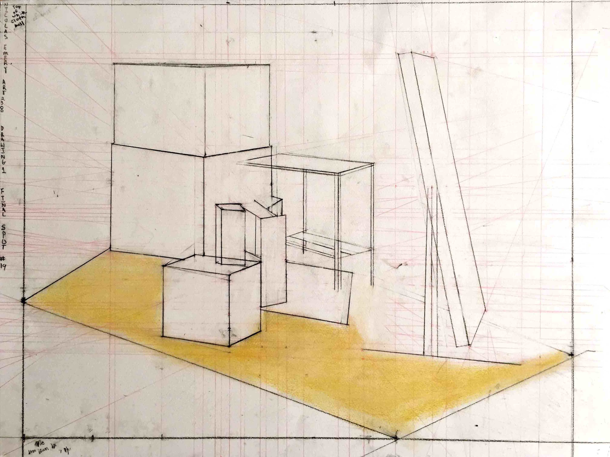
{kind=link}
Source File
11/20/14
24" x 36" newspaper with 4B pencil.
Drawing of boxes, crates and mirror.
Skull In Ribs Drawing
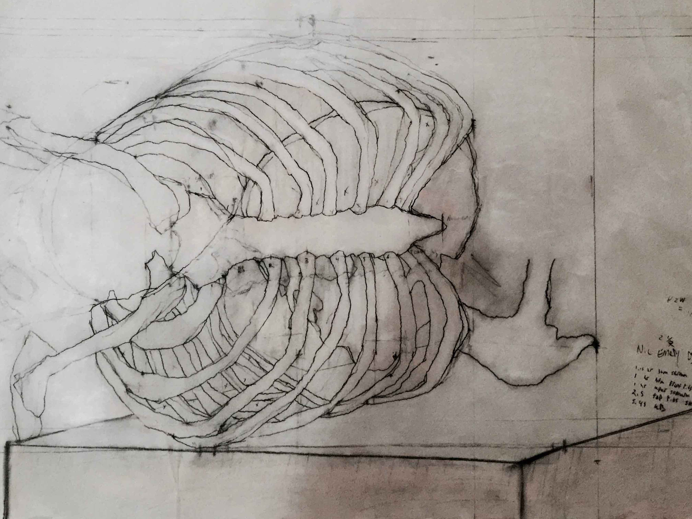
{kind=link}
Source File
02/8/15
24" x 36" newspaper with 4B pencil
Drawing of skull wedged in rib cage.
Skull and Ribs Drawing
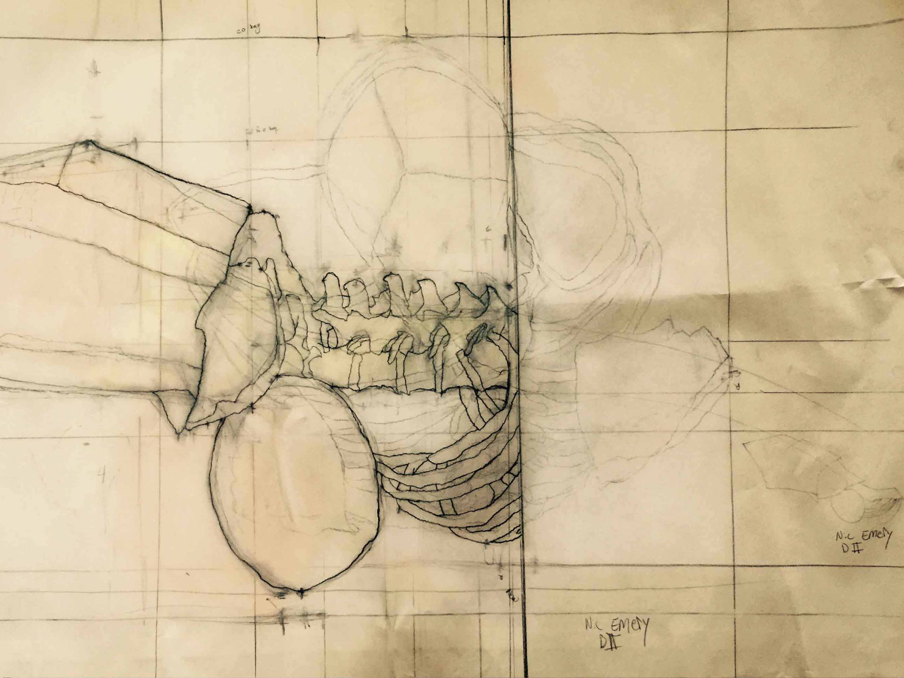
{kind=link}
Source File
01/26/15
24" x 36" newspaper with 4B pencil
Drawing of skull and rib cage.
Shading Drapes Drawing
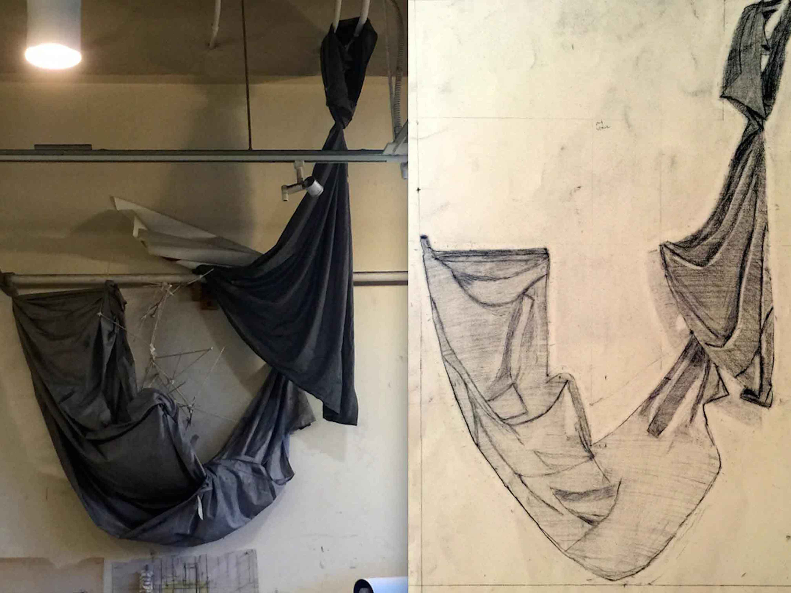
{kind=link}
Source File
11/6/14
24" x 36" newspaper with 4B pencil
Drawing of drapes with shading.
Shading Shapes Drawing
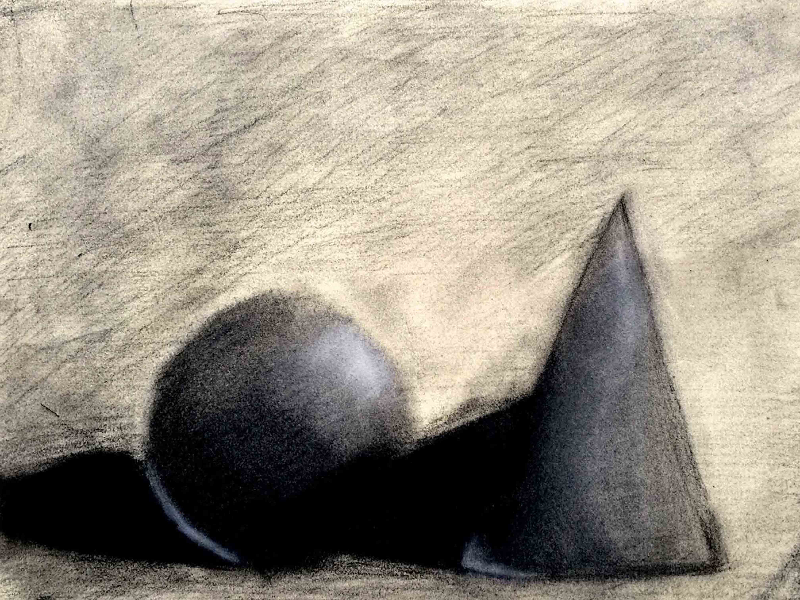
{kind=link}
Source File
10/28/14
24" x 36" newspaper with 4B pencil
Drawing of shapes with shading.